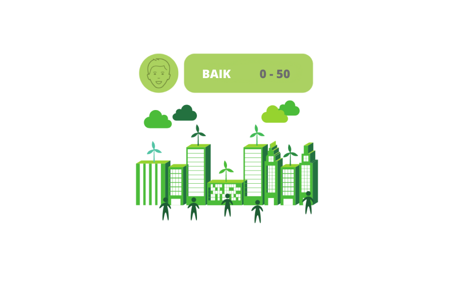

AQI Level

AQI (Air Quality Index) Level Baik menggambarkan kondisi udara yang bersih dan berkualitas tinggi. Pada tingkat ini, kualitas udara Kategori ini tidak memiliki implikasi kesehatan. Semua orang dapat melanjutkan aktivitas outdoor mereka secara normal. Beberapa karakteristik yang mungkin terkait dengan AQI Level Baik adalah:
Sebagai penyaringan udara alami, udara di tingkat ini cenderung bebas dari polutan berbahaya dan partikel berukuran besar. Ini dapat menghasilkan udara yang segar dan bersih untuk dihirup.
Kualitas udara yang aman. AQI Level Baik menunjukkan bahwa tidak ada ancaman signifikan terhadap kesehatan manusia akibat polusi udara. Ini berarti bahwa risiko terhadap penyakit pernapasan dan masalah kesehatan lainnya yang terkait dengan kualitas udara rendah biasanya minimal pada tingkat ini.